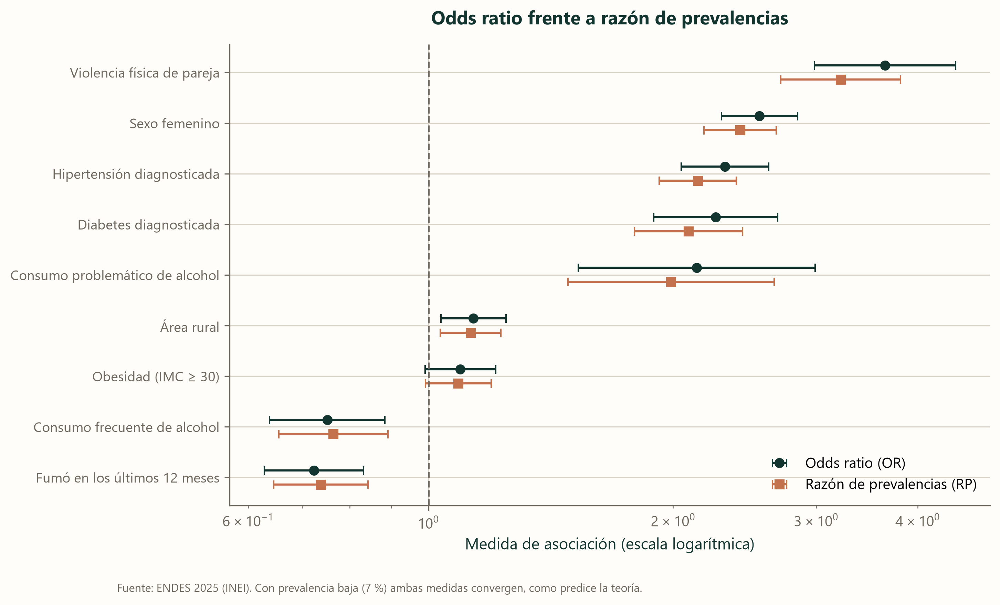
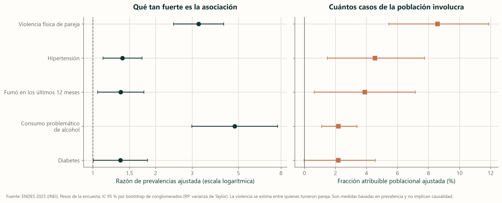

Qué tan fuerte es una asociación y a cuánta gente alcanza
Una asociación se puede medir de dos maneras: qué tan fuerte es y cuánta gente involucra. Son cosas distintas, y conviene no mezclarlas para no sacar conclusiones que los datos no respaldan.
Por qué hablamos de prevalencia y de razón de prevalencias
La ENDES entrevistó a cada persona una sola vez. Lo que se puede contar, entonces, es la prevalencia: cuántas personas tienen síntomas en el momento de la encuesta. La incidencia, es decir, cuántas personas desarrollan síntomas con el paso del tiempo, exige seguir a la gente, y eso no se hizo. Un estudio transversal sirve para medir prevalencia y no permite distinguir qué fue primero (Mann, 2003).
El riesgo relativo clásico se calcula con incidencias, de modo que aquí no lo calculamos. Usamos su equivalente para una fotografía, la razón de prevalencias: el cociente entre la prevalencia de quienes tienen un factor y la de quienes no lo tienen. Para estimarla con un ajuste por otras variables se recomienda la regresión de Poisson con varianza robusta (Zou, 2004; Barros y Hirakata, 2003). Junto a ella damos el odds ratio, que es lo que estima la regresión logística del modelo principal.
Cada factor en una tabla 2×2
Para cada factor, las personas se reparten en cuatro casillas: a, con el factor y con sintomatología; b, con el factor y sin ella; c, sin el factor y con sintomatología; y d, sin el factor y sin ella. De ahí salen las prevalencias de cada grupo y todas las medidas que siguen. Esta tabla cuenta a las personas entrevistadas sin ponderar, como se hace al presentar una 2×2.
| Factor | a | b | c | d | Prevalencia con el factor | Prevalencia sin el factor |
|---|---|---|---|---|---|---|
| Violencia física de pareja | 129 | 665 | 957 | 17 982 | 16,2 % | 5,1 % |
| Sexo femenino | 1 572 | 16 308 | 449 | 11 897 | 8,8 % | 3,6 % |
| Hipertensión diagnosticada | 341 | 2 282 | 1 672 | 25 911 | 13,0 % | 6,1 % |
| Diabetes diagnosticada | 155 | 1 004 | 1 860 | 27 183 | 13,4 % | 6,4 % |
| Consumo problemático de alcohol | 40 | 264 | 1 979 | 27 925 | 13,2 % | 6,6 % |
| Área rural | 811 | 10 466 | 1 210 | 17 739 | 7,2 % | 6,4 % |
| Obesidad (IMC ≥ 30) | 584 | 7 642 | 1 403 | 20 099 | 7,1 % | 6,5 % |
| Consumo frecuente de alcohol | 166 | 3 005 | 1 853 | 25 184 | 5,2 % | 6,9 % |
| Fumó en los últimos 12 meses | 231 | 4 273 | 1 789 | 23 926 | 5,1 % | 7,0 % |
La razón de prevalencias (RP) y el odds ratio (OR) se leen así: un valor de 1 quiere decir que la prevalencia es la misma con y sin el factor; por encima de 1, que es más alta con el factor, y por debajo, que es más baja. Cada una lleva su intervalo de confianza al 95 %. La columna de la derecha traduce el resultado en una línea, como factor de riesgo o factor protector, y con qué intensidad (discreta por debajo de 1,5; moderada hasta 3; marcada desde 3, una convención práctica y no una norma).
| Factor | RP (IC 95 %) | OR (IC 95 %) | χ² (p) | p de Rao y Scott | OR ajustado del modelo | Lectura |
|---|---|---|---|---|---|---|
| Violencia física de pareja | 3,22 (2,71 – 3,81) | 3,64 (2,99 – 4,45) | 183,61 (< 0,001) | < 0,001 | 3,86 (2,74 a 5,44) | Factor de riesgo, con asociación marcada |
| Sexo femenino | 2,42 (2,18 – 2,68) | 2,55 (2,29 – 2,84) | 311,07 (< 0,001) | < 0,001 | 2,94 (2,39 a 3,62) | Factor de riesgo, con asociación moderada |
| Hipertensión diagnosticada | 2,14 (1,92 – 2,39) | 2,32 (2,05 – 2,62) | 185,40 (< 0,001) | < 0,001 | 1,45 (1,13 a 1,84) | Factor de riesgo, con asociación moderada |
| Diabetes diagnosticada | 2,09 (1,79 – 2,43) | 2,26 (1,89 – 2,69) | 86,94 (< 0,001) | < 0,001 | 1,41 (1,00 a 2,00) | Factor de riesgo, con asociación moderada |
| Consumo problemático de alcohol | 1,99 (1,48 – 2,66) | 2,14 (1,53 – 2,99) | 20,64 (< 0,001) | < 0,001 | 6,07 (3,41 a 10,82) | Factor de riesgo, con asociación moderada |
| Área rural | 1,13 (1,03 – 1,23) | 1,14 (1,04 – 1,25) | 7,36 (0,007) | 0,698 | 0,84 (0,71 a 0,99) | Sin asociación distinguible de la nulidad con el diseño muestral |
| Obesidad (IMC ≥ 30) | 1,09 (0,99 – 1,19) | 1,09 (0,99 – 1,21) | 3,15 (0,076) | 0,069 | 1,09 (0,92 a 1,31) | Sin asociación distinguible de la nulidad con el diseño muestral |
| Consumo frecuente de alcohol | 0,76 (0,65 – 0,89) | 0,75 (0,64 – 0,88) | 11,92 (0,001) | 0,015 | 0,83 (0,59 a 1,16) | Factor protector, con asociación discreta |
| Fumó en los últimos 12 meses | 0,74 (0,65 – 0,84) | 0,72 (0,63 – 0,83) | 20,54 (< 0,001) | 0,113 | 1,41 (1,07 a 1,87) | Sin asociación distinguible de la nulidad con el diseño muestral |
Qué dice la prueba chi cuadrado
Junto a cada 2×2 va la prueba chi cuadrado de Pearson, con un grado de libertad. Su hipótesis nula es que el factor y la sintomatología no se asocian, es decir, que la prevalencia es la misma con y sin el factor. Un valor p pequeño indica que, si esa hipótesis fuera cierta, los datos observados serían poco esperables, y por eso la ponemos en duda.
Esa prueba trata a todas las personas como si fueran independientes, y en una encuesta por conglomerados no lo son. La versión de Rao y Scott corrige el estadístico por el efecto del diseño (Rao y Scott, 1984), y esa diferencia cambia la lectura. En el área rural, Pearson sugiere una señal pequeña, y con el diseño desaparece (p = 0,698). Algo parecido ocurre con el tabaco, cuya asociación sin ajustar ya no se sostiene al respetar el diseño. Por eso la columna de la lectura se apoya en la prueba de Rao y Scott y no en la de Pearson.
El odds ratio se aleja un poco más del 1, aunque aquí la diferencia es pequeña
Cada factor aparece medido de dos maneras, el odds ratio y la razón de prevalencias, y cuanto más se separan los dos puntos de un mismo factor, más difieren esas dos formas de contar lo mismo. El odds ratio siempre se aleja más del 1 que la razón de prevalencias, y la diferencia crece cuando la condición es más frecuente. Con una prevalencia del 7 % la teoría dice que deberían parecerse, y aquí casi coinciden: la distancia media es del 5,3 %. Nos pareció mejor comprobarlo con los propios datos que quedarnos con lo que dice el manual. Cuando la condición es poco frecuente, el odds ratio puede leerse de forma aproximada como una razón de prevalencias (Barros y Hirakata, 2003).

Qué dice la literatura de cada asociación
Ninguno de estos resultados está solo. Los hemos puesto junto a lo que se ha publicado, y conviene leer la comparación con cuidado: otros estudios usan otras definiciones, otras edades y otros diseños, y en muchos casos miden una relación a lo largo del tiempo que aquí no podemos observar.
| Factor | Nuestro OR ajustado (IC 95 %) | Lo que se ha publicado | Cómo lo leemos |
|---|---|---|---|
| Sexo femenino | 2,94 (2,39 a 3,62) | Una revisión de más de 90 países halló un OR global de 1,95, con el máximo en la adolescencia y estable en la adultez (Salk et al., 2017). En el Perú, ser hombre se asoció con una razón de prevalencias de 0,50 (Basauri-Delgado et al., 2025). | La brecha es más amplia que el promedio internacional. Con estos datos no es posible establecer el motivo. |
| Violencia física de pareja | 3,86 (2,74 a 5,44) | En mujeres, los estudios de seguimiento muestran una asociación con síntomas depresivos posteriores (OR agrupado de 1,97) y también en sentido contrario, de los síntomas a la violencia posterior (1,93) (Devries et al., 2013). | Asociación fuerte y plausible, probablemente en los dos sentidos. Nuestra cifra es más alta, y puede deberse a que mide prevalencia en una foto y reúne a hombres y mujeres. |
| Consumo problemático de alcohol | 6,07 (3,41 a 10,82) | Con trastorno por consumo de alcohol, las odds de depresión se duplican (OR agrupado de 2,00 a 2,09), y la relación más verosímil va del alcohol a la depresión (Boden y Fergusson, 2011). | Nuestra cifra es mayor y su intervalo es amplio, porque lo declaran 304 personas. Dos criterios de abuso no equivalen a un trastorno por consumo. |
| Hipertensión diagnosticada | 1,45 (1,13 a 1,84) | Una razón de prevalencias de 1,45 en otro análisis peruano (Basauri-Delgado et al., 2025). En cohortes, la depresión precede a la hipertensión (riesgo relativo de 1,42) (Meng et al., 2012). | Misma magnitud que en el estudio peruano. El sentido puede ir de la depresión a la hipertensión. |
| Diabetes diagnosticada | 1,41 (1,00 a 2,00) | Una razón de prevalencias de 1,42 en otro análisis peruano (Basauri-Delgado et al., 2025). La relación es bidireccional: diabetes a depresión, 1,15; depresión a diabetes, 1,60 (Mezuk et al., 2008). | Coincide con el estudio peruano. Con una foto no se sabe cuál precede. |
| Fumó en los últimos 12 meses | 1,41 (1,07 a 1,87) | Una razón de prevalencias de 1,32 para quien fuma cada mes (Basauri-Delgado et al., 2025). Los estudios longitudinales encuentran asociaciones en ambos sentidos y no coinciden en cuál pesa más (Fluharty et al., 2017). | Sentido coherente. La paradoja de la sección 9 muestra cuánto depende de ajustar por sexo. |
| Obesidad (IMC de 30 o más) | 1,09 (0,92 a 1,31) | En estudios longitudinales, la obesidad se asocia con depresión posterior (OR de 1,55) y la depresión con obesidad posterior (1,58) (Luppino et al., 2010). | Nuestra asociación es más moderada y su intervalo incluye al 1. No contradice la literatura, pero tampoco la confirma con estos datos. |
| Área rural | 0,84 (0,71 a 0,99) | Una razón de prevalencias de 0,85 en otro análisis peruano (Basauri-Delgado et al., 2025). Los trastornos del ánimo son algo más frecuentes en zonas urbanas (Peen et al., 2010). | Coincide en el sentido. Sin ajustar, las prevalencias rural y urbana casi no difieren (6,8 % y 7,0 %). |
| Primaria o menos, frente a educación superior | 1,48 (1,14 a 1,93) | El nivel socioeconómico bajo se asocia con más depresión (OR de 1,81), con una relación dosis-respuesta para la educación y el ingreso (Lorant et al., 2003). | Coincide, y la prevalencia baja de forma ordenada con cada nivel (8,8 %, 7,0 % y 5,3 %). |
| Altitud (por cada 1 000 m) | 1,09 (1,03 a 1,15) | Mayor puntaje depresivo con cada 100 m de altitud en la ENDES de 2013 a 2020 (Hernández-Vásquez et al., 2022), y una razón de prevalencias de 1,41 a partir de 2 500 m en la de 2019 (Zegarra-Rodríguez et al., 2022). | Coincide con el ajuste por las personas, pero se atenúa al comparar dentro de un mismo departamento (sección 8). |
Cuánto pesa cada factor en la población
Una asociación fuerte no es lo mismo que un gran impacto. Para ver la diferencia se usan tres medidas que parten de la prevalencia y no de la incidencia, y que por eso conviene leer con cuidado:
- La diferencia de prevalencias entre quienes tienen el factor y quienes no, en puntos porcentuales.
- La fracción atribuible en los expuestos: de las personas con el factor que dieron positivo, qué parte correspondería al factor.
- La fracción atribuible poblacional, la más útil en salud pública: qué parte de todos los casos de la población se asocia con el factor. Depende de la fuerza de la asociación y también de cuán frecuente sea el factor (Miettinen, 1974; Rockhill et al., 1998).
Las dos fracciones solo significan «casos que no ocurrirían» si la asociación fuera causal y no estuviera confundida, y este diseño no permite comprobarlo. Por eso las llamamos fracciones atribuibles y no fracciones evitables. Se calcularon con los pesos de la encuesta y con la razón de prevalencias ajustada por las mismas variables del modelo principal, y sus intervalos salen de un remuestreo de conglomerados dentro de estratos (Rao y Wu, 1988).
| Factor | Personas con el factor | RP ajustada (IC 95 %) | Diferencia sin ajustar (puntos) | Fracción en expuestos | Fracción poblacional, % (IC 95 %) |
|---|---|---|---|---|---|
| Sexo femenino | 51,1 % | 2,70 (2,23 a 3,27) | 5,8 | 63,0 % | 45,81 (38,15 a 52,66) |
| Violencia física de pareja * | 3,8 % | 3,22 (2,44 a 4,25) | 12,9 | 68,9 % | 8,57 (5,45 a 11,89) |
| Hipertensión diagnosticada | 10,2 % | 1,39 (1,12 a 1,72) | 4,5 | 28,0 % | 4,55 (1,48 a 7,74) |
| Fumó en los últimos 12 meses | 16,1 % | 1,36 (1,05 a 1,76) | -0,7 | 26,6 % | 3,90 (0,63 a 7,14) |
| Consumo problemático de alcohol | 1,0 % | 4,80 (2,98 a 7,71) | 12,1 | 79,1 % | 2,19 (1,12 a 3,39) |
| Diabetes diagnosticada | 5,0 % | 1,36 (1,00 a 1,83) | 4,6 | 26,3 % | 2,18 (-0,02 a 4,57) |
| Obesidad (IMC ≥ 30) | 29,5 % | 1,09 (0,93 a 1,28) | 1,1 | — | — |
| Consumo frecuente de alcohol | 12,5 % | 0,84 (0,61 a 1,15) | -1,5 | — | — |
| Área rural | 16,7 % | 0,85 (0,73 a 0,99) | -0,8 | — | — |
La asociación más fuerte no es la que alcanza a más gente
El panel de la izquierda mide qué tan fuerte es la asociación y el de la derecha, cuántos casos de la población involucra, con un factor en cada fila. Un factor puede ser fuerte y poco frecuente, y entonces involucra a pocos casos. El consumo problemático de alcohol tiene la razón de prevalencias más alta (4,80) y, sin embargo, una fracción poblacional de solo 2,2 %, porque lo declara apenas el 1,0 % de la población. La hipertensión, con una asociación moderada (1,39), involucra al 4,5 % de los casos porque la tiene alrededor del 10 % de la gente. Las fracciones de distintos factores no se suman, porque una misma persona puede tener varios a la vez.

Esta diferencia entre fuerza y alcance es la misma que aparece en la sección 12, donde el alcohol problemático encabeza el ranking por efecto y ocupa un lugar bajo por utilidad predictiva. Son dos formas de decir que un efecto grande sobre muy poca gente apenas mueve el panorama general.